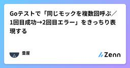
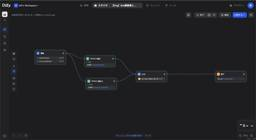
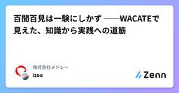
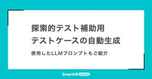
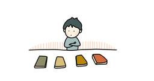
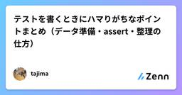

直近1週間の更新
9/6 (土)
フロントエンドのテストアーキテクチャ 1
1 Zennの「Test」のフィード
Zennの「Test」のフィード
近年 testing/library をはじめとしたフロントエンド向けのテストツールが普及し, フロントエンドでのテストが一般的になってきました.また手動テストとE2Eテストを中心としたアイスクリームコーン型のテスト構成から, Testing Trophy の普及によってフロントエンドでも適切なテストを考える機会が増えてきています. Testing TrophyThe Testing Trophy and Testing Classifications よりTesting Trophy は Kent C. Dodds が提唱したテスト比率に関する考え方です[1]. Testi...
15時間前

Goテストで「同じモックを複数回呼ぶ／1回目成功→2回目エラー」をきっちり表現する Zennの「Test」のフィード
ループや再試行ロジックをテストするときに同じメソッドを複数回呼ぶ—「1回目は成功」「2回目はエラー」のように呼び出しごとに結果を切り替えるにはどう書く？本稿は初学者でも迷わないよう、最小コードで“順序と回数”を保証する実装パターンを3通りで示します。 TL;DRgomock 推奨：InOrder で順序を、Times/DoAndReturn で回数と挙動を制御。順序制約はデフォルトでは無効なので InOrder/Call.After を使うのがコツ。Go Packagestestify/mock：mock.InOrder（v1.10+）と Once/Times の...
15時間前
9/5 (金)
制度ではなく、関係性が人を育てる。変革人事が仕掛ける“カルチャー再定義”  PTW／ポールトゥウィン【公式】
PTW／ポールトゥウィン【公式】
入社わずか2年で、5,000人規模の人事部門を担うこととなった執行役員 人事本部長の広瀬。社外で培った経験を新たな風としてポールトゥウィンへ持ち込んだ時、入社11年目の小野が社内のつなぎ役となり、変革の人事を支えてきました。前回の記事では、30年の歴史をもつポールトゥウィンが、企業カルチャーを再定義し“アップデートし続ける組織”へと進化するための構想と人事戦略の全体像に迫りました。今回のテーマは、旗印として掲げられた「Shape the New PTW」が、現場でどのような具体的施策として展開されているのか。引き続き広瀬と小野の2人に話を聞きました。続きをみる
1日前

AIでアンケートQAはどこまで自動化できるか？プロンプトエンジニアリングの試行錯誤と実践知  QA - エムスリーテックブログ
QA - エムスリーテックブログ
【Unit7 ブログリレー1日目】エムスリーエンジニアリンググループの秦野です。 Unit7というチームで、主に医師向けアンケートサービスの開発・運用を担当しています。 私たちのチームでは「ibis」というアンケート作成・配信システムを使っています。今回はこのシステムにおける業務改善の一環として、AIを活用してアンケートの品質保証（QA）プロセスを大幅に効率化した話をご紹介します。 ▼ibisについては次のブログ記事にて概要を説明しています 新しいアンケートシステムをつくった（Goとシステム概要編） - エムスリーテックブログ アンケート作成のプロセスと課題 AIによる「差分チェック」アプリケ…
2日前

百聞百見は一験にしかず ──WACATEで見えた、知識から実践への道筋 Zennの「Test」のフィード
こちらの記事は「MEDLEY Summer Tech Blog Relay」の10日目の記事です。https://developer.medley.jp/entry/2025/08/15/20250815/ はじめにこんにちは。株式会社メドレーでQAエンジニアをしている井津です。今年5月に開発者からQAエンジニアに転身し、現在は調剤薬局の基幹システムのQAをしています。6月に「WACATE2025夏」という1泊2日の合宿形式のワークショップに参加してきました。本記事では、WACATEのプログラム内容の詳細には触れず、私がWACATEを通じて、知識として理解しているだけの状態か...
2日前
百聞百見は一験にしかず ──WACATEで見えた、知識から実践への道筋 Zennの「QA」のフィード
こちらの記事は「MEDLEY Summer Tech Blog Relay」の10日目の記事です。https://developer.medley.jp/entry/2025/08/15/20250815/ はじめにこんにちは。株式会社メドレーでQAエンジニアをしている井津です。今年5月に開発者からQAエンジニアに転身し、現在は調剤薬局の基幹システムのQAをしています。6月に「WACATE2025夏」という1泊2日の合宿形式のワークショップに参加してきました。本記事では、WACATEのプログラム内容の詳細には触れず、私がWACATEを通じて、知識として理解しているだけの状態か...
2日前
Kotlinにおける快適なテスティングエコシステム Zennの「Test」のフィード
Open-source tools for your testing ecosystem持続可能なソフトウェアに欠かせないソフトウェアテスティングにおけるエコシステムにおいて、Kotlinプロジェクトで利用可能で人気のソフトウェアを紹介します。今回紹介するのは下記ですdetekt: Static Code Analyzer (静的解析)kover: Kotlin Coverage Tool (テストカバレッジ)allure: Testing Report (テストレポートのビジュアライズ) Detekthttps://github.com/detekt/de...
2日前
Kotlinにおける快適なテスティングエコシステム Zennの「Test」のフィード
Open-source tools for your testing ecosystem持続可能なソフトウェアに欠かせないソフトウェアテスティングにおけるエコシステムにおいて、Kotlinプロジェクトで利用可能で人気のソフトウェアを紹介します。今回紹介するのは下記ですdetekt: Static Code Analyzer (静的解析)kover: Kotlin Coverage Tool (テストカバレッジ)allure: Testing Report (テストレポートのビジュアライズ) Detekthttps://github.com/detekt/de...
2日前
9/4 (木)
【Go】Goのテストに入門してみた！ ~go-cmp編~ Zennの「Test」のフィード
はじめに前回は「Testify」を見ていきました。今回は「go-cmp」に入門します！前回の記事はこちら！ この記事でわかることgo-cmp の概要go-cmp を使った構造体比較の基本go-cmp を使った複合体を含む構造体比較の方法 go-cmpとは？go-cmp は、Googleが提供しているGo用の比較ライブラリです。標準の reflect.DeepEqual() よりも柔軟で細かい制御が必要なケースで活躍します。特徴としては以下のような点があります。複雑な構造体やネストされたデータでも比較できるフィールド単位で無視（Ignore）...
2日前
過去のBtoC向けのエッジケースを整理し、BtoBサービスとの違いを考える。 1 Zennの「QA」のフィード
!この記事は毎週必ず記事がでるテックブログ Loglass Tech Blog Sprint の107週目の記事です！ 3年間連続達成まで残り52週となりました！ はじめに2025年6月に、株式会社ログラスへQAエンジニアとして入社しましたAkinovと申します。過去、ゲーム・エンターテイメント向けBtoCのウォーターフォール開発におけるQA業務に長年携わってきた事から、BtoB・アジャイル開発ともにほぼ未経験、日々試行錯誤＆学びを得ながら業務に取り組んでおります。今回、本ブログの執筆に際して過去のテックブログを参照した所、エンジニア視点でのBtoBとBtoCの違いについて...
2日前
【登壇レポート】不具合は上流で止める！ ─ JaSST’25 Tokyoで語った最適な品質保証と第三者検証の価値 PTW／ポールトゥウィン【公式】
2025年3月27日、日本最大規模のソフトウェアテストシンポジウム 「JaSST’25 Tokyo」 に、ポールトゥウィンQAソリューション事業部 シニアマネージャー 木川 広基と、スペシャリスト 尾崎 由有子が登壇しました。今回のテーマは、「テストだけでは終わらない！継続的な品質向上を実現するために、事業会社、ツールベンダー、第三者検証の３社が考えるアプローチとは？」。本記事では、当日の講演内容と議論のエッセンスをレポートします。続きをみる
2日前
テスト観点ってなに？はもう終わり。完全理解マンへの道 Zennの「Test」のフィード
はじめにソフトウェアテストを行う際によく聞く「テスト観点」という言葉。しかし、その意味や「テスト項目」との違いについて曖昧な理解のままテストを行っている方も多いのではないでしょうか。この記事では、テスト観点の基本概念について整理し、実際のテスト設計にどう活用するかを解説します。!この記事は、筆者がソフトウェアテストの現場で実際に経験したことや、様々な方との議論を通じて得た気づきをもとに「テスト観点とは何か」について整理したものです。学術的な出典に基づくものではなく、実践の中で培った個人的な見解であることをご了承ください。 テスト観点とは何かテスト観点とは、ソフトウェアの...
3日前
9/3 (水)
【Go】Goのテストに入門してみた！ ~Testify編~ Zennの「Test」のフィード
はじめに前回は「構造体の比較テスト」を見ていきました。今回は「Testify」に入門します！前回の記事はこちら！ この記事でわかることstretchr/testify の概要stretchr/testify を使った構造体比較の基本stretchr/testify を使った複合型構造体比較の方法 Testifyとは？stretchr/testify は、Goでテストを書くときによく使われる、アサーションライブラリ兼モックライブラリ です。標準の testing パッケージを補完し、テストコードを短く・読みやすく・書きやすくしてくれます。 Tes...
3日前
『テストの7つの原則』 〜 パート⑦ final 〜 Zennの「Test」のフィード
はじめに現在、アプリ開発者としてプロダクトの持続的な成長やユーザーへのコミットに寄与するためにも、SDLC全体を見渡して開発をすること、および、それにはテストに関する体系的な知識が必要だと考え、それを効率良く学べるJSTQB Foundation Levelの資格試験の勉強をしていました。この記事ではそこでの学びをアウトプットしたと思います。今回はその中でも「テストの7つの原則」の一部について記事にしたいと思います。なお今回は集大成として 欠陥ゼロの落とし穴こちらの原則について記事にしてみようと思います。 欠陥ゼロの落とし穴とは 前提を疑うまずはこ...
3日前
『テストの7つの原則』 〜 パート⑦ final 〜  ソフトウェアテストタグが付けられた新着記事 - Qiita
ソフトウェアテストタグが付けられた新着記事 - Qiita
はじめに現在、アプリ開発者としてプロダクトの持続的な成長やユーザーへのコミットに寄与するためにも、SDLC全体を見渡して開発をすること、および、それにはテストに関する体系的な知識が必要だと考え、それを効率良く学べるJSTQB Foundation Levelの資...
3日前
QAエンジニアはAIに淘汰されないさ。だって実は、俺たちアーティストだから。 30 Zennの「Test」のフィード
はじめにふざけた表題ですみません（笑）私が元々バンドマンだったからでもありません。3ヶ月ほどブログを書いていませんでした。シンプルに忙しかったというのもありますが、表題のようなことをずっと考えていたからでもあります。先日、私が非常に愛読している秋山さんのとあるブログの記事を拝読し、非常に深い共感を覚えました。QAという職種に対する洞察や捉え方に触れ、自分自身の経験や考えとも重なる部分が多く、改めてこの領域の奥深さを感じる機会となりました。秋山さんのブログは「QAとは何か？」と悩んだ時に必ず立ち返るブログです。他に井芹さんのブログやアシカさんのブログなどもよく参考にしています...
4日前
最終回【第11回】論理をスキルの引出しに｜実務三年目からの発見力と仮説力  品質 | Sqripts
品質 | Sqripts
帰納的な推論 と 発見的な推論(アブダクション) は、私たちがソフトウェア開発の現場/実務で（知らず知らずにでも）駆使している思考の形です（それどころか日々の暮らしでも使っています）。 それほど“自然な”思考の形ですが、...The post 最終回【第11回】論理をスキルの引出しに｜実務三年目からの発見力と仮説力 first appeared on Sqripts.
4日前
9/2 (火)
【Go】Goのテストに入門してみた！ ~構造体の比較テスト編~ Zennの「Test」のフィード
はじめに前回は「スライスとマップの比較テスト」を見ていきました。今回は「構造体の比較テスト」に入門します！前回の記事はこちら！ この記事でわかること構造体比較の基本複合型を含む構造体の比較方法構造体の比較テストを行うシーン 構造体比較の基本構造体フィールドにスライスやマップなどの複合型が存在しない場合は、 == を使って比較することができます。main_test.gopackage mainimport ( "testing")type User struct { ID int Name string Age...
4日前
【ライブデモ＆全フロー実演】AI品質向上の全体像が超具体でわかる！ LLMOps 実践会 — イベントレポート Zennの「Test」のフィード
こんにちは！DAIJOBU 代表の山中です。今回は 2025 年 8 月 19 日に開催したオフラインイベント【ライブデモ＆全フロー実演】AI品質向上の全体像が超具体でわかる！ LLMOps 実践会 のレポートをお届けします！https://connpass.com/event/363622/ ⏰️当日のタイムテーブル 発表内容今回の発表資料です。 【ライブデモ＆全フロー実演】AI品質向上の全体像が超具体でわかる！ LLMOps 実践会今回のイベントでは、弊社が実際に行っているQAプロセスを余すことなく公開しました！ネットや論文では得られない、DAIJOBU...
4日前
【ライブデモ＆全フロー実演】AI品質向上の全体像が超具体でわかる！ LLMOps 実践会 — イベントレポート Zennの「QA」のフィード
こんにちは！DAIJOBU 代表の山中です。今回は 2025 年 8 月 19 日に開催したオフラインイベント【ライブデモ＆全フロー実演】AI品質向上の全体像が超具体でわかる！ LLMOps 実践会 のレポートをお届けします！https://connpass.com/event/363622/ ⏰️当日のタイムテーブル 発表内容今回の発表資料です。 【ライブデモ＆全フロー実演】AI品質向上の全体像が超具体でわかる！ LLMOps 実践会今回のイベントでは、弊社が実際に行っているQAプロセスを余すことなく公開しました！ネットや論文では得られない、DAIJOBU...
4日前
テスト自動化の新たな地平：AIはテストエンジニアの日常をどう変えるのか？最新トレンドとツールの実態に迫る 品質 | Sqripts
テストエンジニアのユッキーです。普段は自動化担当部署で、お客様のテスト自動化導入をご支援したり、社内の自動化技術の研究開発に携わっています。 皆さんの周りでも、「AI」という言葉を聞かない日はないのではないでしょうか。あ...The post テスト自動化の新たな地平：AIはテストエンジニアの日常をどう変えるのか？最新トレンドとツールの実態に迫る first appeared on Sqripts.
4日前
9/1 (月)

探索的テスト補助用テストケースの自動生成 ー 使用したLLMプロンプトもご紹介 4 QA - SmartHR Tech Blog
QA - SmartHR Tech Blog
探索的テスト補助用テストケースの自動生成 ー 使用したLLMプロンプトもご紹介 勤怠管理機能チームでQAエンジニアをしているringoです。 勤怠管理機能の開発では、1つの大きな単位での機能を複数のProduct Backlog Item(以下、PBI)に分割し、リリース前に「フィーチャーテスト」という、機能全体の探索的テストを行なうフェーズを設けています。ここで言う探索的テストは、テスト実行者が機能を実際に操作しながら、事前に定義されていない観点や課題を能動的に発見していくテスト手法を指しています。 今回は、このフィーチャーテストのフェーズにおいて、Clineを用いて探索的テストの補助となる…
5日前

非エンジニアもMarkdownでテストを書ける — PlaywrightとGaugeによる自動テスト 124 QA - エムスリーテックブログ
はじめに エムスリーテクノロジーズの永江 (@yukinagae)です。 2025年7月からエムスリーテクノロジーズに入社し、グループ会社への技術支援をしています。詳しい業務内容は、前回の記事でも紹介しました。 支援内容は、各グループ会社の状況や参画するエンジニアのスキルによって変わりますが、共通してCI/CDの強化から始めることが多いです。なかでも特に自動テストの強化は、最初に手がけるべき施策だと考えています。 その理由は、次の3つです。 導入ハードルが低い: 既存のコードに影響を与えずに導入できる 既存コードの理解が深まる: テストを書く過程で自然とコードの動きやドメイン知識が身につく 成…
6日前
心理的安全性をつくらない くぼぴー
心理的安全性は“副作用”であるこんにちは。kubopです。「心理的安全性を作ろう！」最近よく耳にする言葉です。とても大事なテーマですが、私はここにちょっとした違和感を覚えます。なぜなら、心理的安全性は目指すべきゴールではなく、結果として現れる副作用だと思うからです。続きをみる
6日前
8/31 (日)

困った時に出会う本ほど身に沁みる つとむ QAエンジニア
今、自分に足りないもの、困っている時に見つけた本、おすすめされた本は、自分のなかで大切な本になります。面白そうだから読んでみたい今話題になっているから、読んでみたい続きをみる
6日前

テストを書くときにハマりがちなポイントまとめ（データ準備・assert・整理の仕方） Zennの「Test」のフィード
※本記事は ChatGPT による生成コンテンツをもとに、筆者が加筆・修正を行ったものです。 1) データ準備が複雑になる問題 痛みの正体「全部指定」地獄：テストごとに全フィールド埋めるコピペ肥大化：似た準備が散らばる意図が読めない：この値は意味があるの？ただのダミー？ 解決パターンTest Data Builder / Object Mother“最小限の正当データ”にデフォルトを持つビルダーを用意し、差分だけ上書きするシナリオ関数（Given系ヘルパ）「有効期限切れのユーザー」「在庫ゼロの商品」など意味で準備する階層化したファ...
6日前